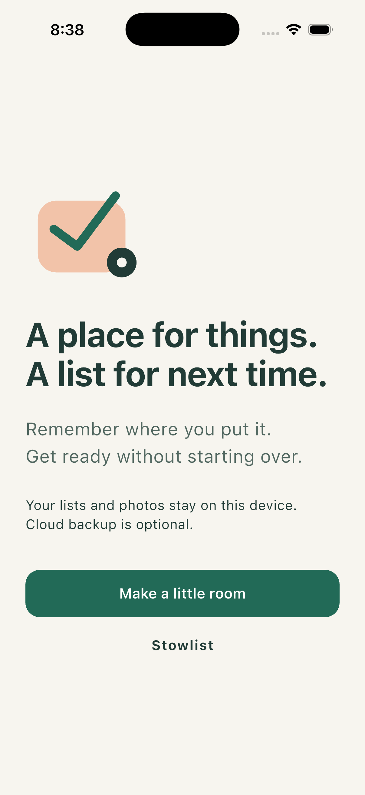

Keep your things
Give an item a name, a place, and an optional photo or note. Search your own little library when you need it.
A little less to keep in your head
Remember where you put it. Remember to take it. Stowlist brings your things and your reusable checklists together.
Being prepared for iPhone. The App Store link will appear here when availability is confirmed.

From the Stowlist iPhone app.
Put the small details somewhere
For office mornings, gym sessions, weekend bags, or the things you always mean to bring. Keep a familiar list ready for its next outing.
Give an item a name, a place, and an optional photo or note. Search your own little library when you need it.
Link saved items to a checklist so what you need and where it lives stay together.
Mark items packed or skip them for this outing. Start fresh next time without rebuilding your list.
Where did I put that?
A place name is enough. Add a photo if it helps, keep a short note, and update the location when something moves.
Stowlist remembers the place you enter. It does not track an object or use GPS to find it.
Try the idea
Some days you need everything. Some days you can skip the notebook. Your reusable list stays ready either way.
0 packed · 0 skipped · 3 to check
Website example only. Changes are not saved.
Useful without the fuss
Your item library, photos, and checklists live on your device. The core app works offline, with no advertising or task-behavior analytics.
Export a portable copy with photos, or choose a manual cloud backup for text and list details. Cloud backup does not include photos and is tied to an anonymous device identity. See how backup works.